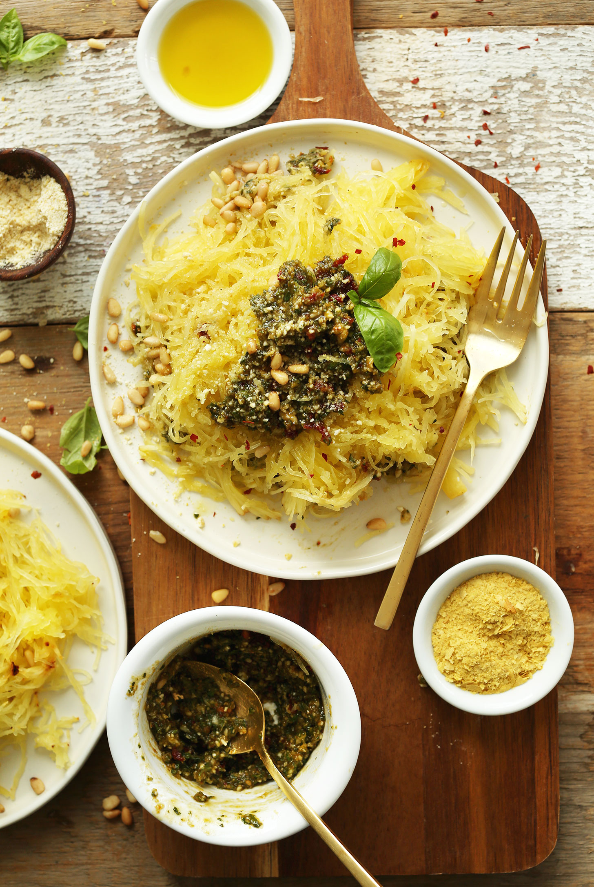

Spaghetti Squash with Basil Pesto

Description
This is a plant-based recipe the replaces heavy-starchy pasta with light and nutritious spaghetti squash. With the addition of a flavourful sun-dried tomato and basil pesto , this truly is a to-die-for combo!
Ingredients
Pesto
- 1/4 cup raw cashews
- 1/4 cup toasted pine nuts
- 2 tbsp nutrional yeast
- 1/4 tsp sea salt
- 2 cups fresh basil
- 3 cloves of minced garlic
- 3 tbsp sun-dried tomatoes(thinly chopped)
Directions
- Preheat oven to 400 degrees F (204 C)
and line a large baking sheet (or more if increasing batch size)
with foil.
- Carefully halve spaghetti squash lengthwise using a sharp knife. I find the best way is to pierce the skin with the very tip of the knife and push it all the way through to the other side. Rock the knife back and forth to cut one half all the way through, then repeat on the other side. Use an ice cream scoop (or sharp spoon) to scrape out the seeds and most of the stringy parts.
- Brush the interior with oil and sprinkle with a little salt. Place cut-side down on baking sheet. Roast for 45 minutes, or until a knife easily pierces the skin and flesh. Remove from oven and set aside.
- In the meantime, add cashews, pine nuts, nutritional yeast, and sea salt to a blender or food processor and pulse until a fine meal.
- Add basil, garlic, sun-dried tomatoes, and olive oil and puree into a fine paste. If it has trouble mixing, add a bit more oil or hot water (2-3 Tbsp // amount as original recipe is written // adjust if altering batch size) to help encourage it along. It doesn’t need to be finely pureed, just well-mixed. A bit of texture is a good thing in this dish. Taste and adjust seasonings as needed.
- Use a fork to scoop out spaghetti squash into fine strings and divide between serving plates. Top with desired amount of pesto and lightly toss.
- Serve with additional toppings as desired (listed above). I prefer red pepper flakes and vegan parmesan cheese.
- Store leftovers covered in the refrigerator for 2-3 days, though best when fresh. Pasta can be enjoyed hot, chilled, or at room temperature.